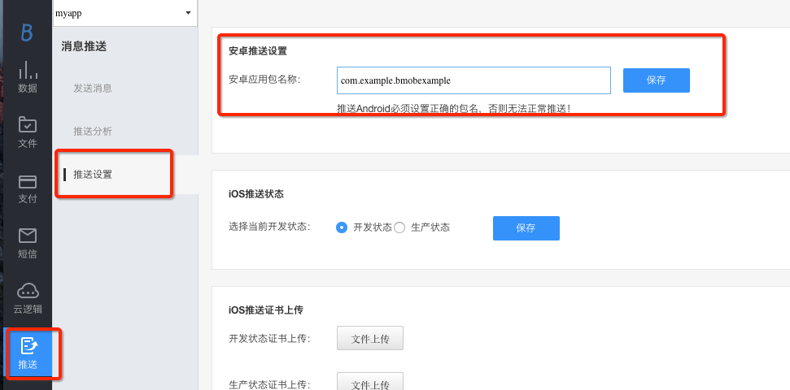
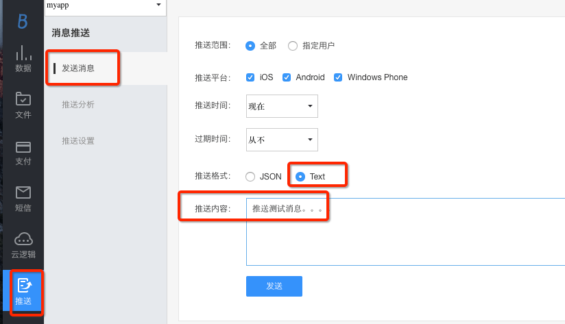

1、BmobPush SDK 简介¶
推送能够让你和你的应用保持联系，你可以快速而有效地通知到所有的用户，下面这个教程将会教你如何使用BmobPush SDK来推送消息。请确保您在使用BmobPush SDK之前已经了解此文档，如有疑问请加Push使用交流群182897507咨询。
2、BmobPush SDK 集成¶
2.1、集成SDK¶
| SDK或Demo | 下载地址 |
|---|---|
| 数据服务 SDK | 使用最新版本v3.7.8，集成方式请见下方的自动集成方式。手动集成下载地址：https://www.bmobapp.com/downloads |
| 消息推送 SDK | 使用最新版本v1.0.5，集成方式请见下方的自动集成方式。手动集成下载地址：https://www.bmobapp.com/downloads |
| 消息推送 Demo | https://github.com/chaozhouzhang/bmob-push-demo |
自动集成方式：
1、配置project下的build.gradle文件：
allprojects {
repositories {
jcenter()
//Bmob的maven仓库地址
maven {url 'https://dl.bintray.com/chaozhouzhang/maven' }
}
}
2、配置app下的build.gradle文件：
dependencies {
//Bmob的数据服务SDK
implementation 'cn.bmob.android:bmob-sdk:3.7.8'
//Bmob的消息推送SDK
implementation 'cn.bmob.android:bmob-push:1.0.5'
}
2.2、配置AndroidManifest.xml¶
2.2.1、在您的应用程序AndroidManifest.xml文件中添加相应的权限¶
请注意在Android 6.0版本开始某些权限需要动态获取，详情请看Android Developwers官方文档，android-6.0-changes和android-7.0-changes。
<!--TODO 集成：1.1、添加数据SDK和推送SDK需要的权限-->
<!--比目数据SDK所需的权限-->
<!--允许联网 -->
<uses-permission android:name="android.permission.INTERNET" />
<!--获取GSM（2g）、WCDMA（联通3g）等网络状态的信息 -->
<uses-permission android:name="android.permission.ACCESS_NETWORK_STATE" />
<!--获取wifi网络状态的信息 -->
<uses-permission android:name="android.permission.ACCESS_WIFI_STATE" />
<!--保持CPU 运转，屏幕和键盘灯有可能是关闭的,用于文件上传和下载 -->
<uses-permission android:name="android.permission.WAKE_LOCK" />
<!--获取sd卡写的权限，用于文件上传和下载-->
<uses-permission android:name="android.permission.WRITE_EXTERNAL_STORAGE" />
<!--允许读取手机状态 用于创建BmobInstallation-->
<uses-permission android:name="android.permission.READ_PHONE_STATE" />
<!--推送所需的权限-->
<uses-permission android:name="android.permission.RECEIVE_USER_PRESENT" />
<uses-permission android:name="android.permission.RECEIVE_BOOT_COMPLETED" />
2.2.2、在您的应用程序AndroidManifest.xml文件中注册BmobPush SDK运行所需的推送服务和消息接收器¶
<!--TODO 集成：1.2、添加推送所需要的服务和广播-->
<service
android:label="PushService"
android:name="cn.bmob.push.lib.service.PushService"
android:process=":bmobpush"
android:exported="true">
<intent-filter>
<action android:name="cn.bmob.push.lib.service.PushService"/>
</intent-filter>
</service>
<!-- 用于进程保活 -->
<service
android:name="cn.bmob.push.lib.service.PushNotifyService"
android:process=":bmobpush" >
</service>
<receiver android:name="cn.bmob.push.PushReceiver" >
<intent-filter>
<!-- 系统启动完成后会调用 -->
<action android:name="android.intent.action.BOOT_COMPLETED" />
<!-- 解锁完成后会调用 -->
<action android:name="android.intent.action.USER_PRESENT" />
<!-- 监听网络连通性 -->
<action android:name="android.net.conn.CONNECTIVITY_CHANGE" />
</intent-filter>
</receiver>
<!-- 第3步中创建的消息接收器，在这里进行注册 -->
<receiver android:name="your.package.MyPushMessageReceiver">
<intent-filter >
<action android:name="cn.bmob.push.action.MESSAGE"/>
</intent-filter>
</receiver>
<meta-data
android:name="BMOB_PUSH_CLASS"
android:value="你自己定义的消息推送广播接收器">
</meta-data>
<!-- 接收心跳和唤醒的广播，要和PushService运行在同个进程 -->
<receiver
android:name="cn.bmob.push.PushNotifyReceiver"
android:process=":bmobpush" >
<intent-filter>
<!-- 接收心跳广播的action -->
<action android:name="cn.bmob.push.action.HEARTBEAT" />
<!-- 接收唤醒广播的action -->
<action android:name="cn.bmob.push.action.NOTIFY" />
</intent-filter>
</receiver>
2.3、配置代码¶
2.3.1、在你的应用程序中创建一个消息接收器¶
Push消息通过action=cn.bmob.push.action.MESSAGE的Intent把数据发送给客户端your.package.MyPushMessageReceiver,消息格式由应用自己决定，PushService只负责把服务器下发的消息以字符串格式透传给客户端。
your.package.MyPushMessageReceiver的代码示例如下：
//TODO 集成：1.3、创建自定义的推送消息接收器，并在清单文件中注册
public class MyPushMessageReceiver extends BroadcastReceiver{
@Override
public void onReceive(Context context, Intent intent) {
// TODO Auto-generated method stub
if(intent.getAction().equals(PushConstants.ACTION_MESSAGE)){
Log.d("bmob", "客户端收到推送内容："+intent.getStringExtra("msg"));
}
}
}
2.3.2、启动推送服务¶
在你的应用程序主Application中调用如下方法：
//TODO 集成：1.4、初始化数据服务SDK、初始化设备信息并启动推送服务
// 初始化BmobSDK
Bmob.initialize(this, "你的Application Id");
// 使用推送服务时的初始化操作
BmobInstallationManager.getInstance().initialize(new InstallationListener<BmobInstallation>() {
@Override
public void done(BmobInstallation bmobInstallation, BmobException e) {
if (e == null) {
Logger.i(bmobInstallation.getObjectId() + "-" + bmobInstallation.getInstallationId());
} else {
Logger.e(e.getMessage());
}
}
});
// 启动推送服务
BmobPush.startWork(this);
代码中的"你的Application Id"就是你在Bmob后台中创建的应用程序的Application Id，如果你不知道这是什么，可以参考快速入门文档中的注册Bmob账号部分。
3、控制台推送消息给客户端¶
3.1、推送设置¶
在应用面板-->消息推送-->推送设置界面中填写包名进行保存。

3.2、推送消息¶
完成设置后，你可以运行应用程序，从控制台送一条消息给客户端。

3.3、推送注意事项¶
在后台推送消息给Android和iOS两个平台的时候，有一些需要注意的： 1、由于Android和iOS的提送机制不同，iOS要经过APNS，Android的推送完全是走Bmob的长连接服务，为兼容这个问题，如果你选择发送格式为“json”格式时，需要添加APNS兼容头部（见下面json的aps部分），其中，sound是iOS接收时的声音，badge是iOS通知栏的累计消息数，推送内容格式如下：
{
"aps": {
"sound": "cheering.caf",
"alert": "这个是通知栏上显示的内容",
"badge": 0
},
"xx" : "json的key-value对，你可以根据情况添加更多的，客户端进行解析获取",
}
2、如果你选择发送格式为“text”时，推送内容为“推送消息测试”，Bmob会自动添加aps部分发送给APNS，，相当于自动生成如下的json格式的推送内容：
{
"aps": {
"alert": "推送消息测试",
}
}
同时，也会发送给Android端，相当于自动生成如下的json格式的推送内容：
{
"alert" : "推送消息测试",
}
3、如果只是发送给Android端，大家可以自定义json格式的数据。
4、由于iOS的APNS的推送的大小是有限制的，默认最多256bytes，因此,如果你需要跨平台互通的话，需注意推送的内容不要太长。
4、BmobPush SDK 的使用¶
4.1、初始化设备信息¶
4.1.1、设备信息表：BmobInstallation¶
使用消息推送前，首先需要初始化设备信息。
BmobInstallationManager.getInstance().initialize(new InstallationListener<BmobInstallation>() {
@Override
public void done(BmobInstallation bmobInstallation, BmobException e) {
if (e == null) {
Logger.i(bmobInstallation.getObjectId() + "-" + bmobInstallation.getInstallationId());
} else {
Logger.e(e.getMessage());
}
}
});
初始化成功后，数据服务SDK会自动生成一个BmobInstallation表，它包含了推送所需要的所有信息。例如，如果你有一个棒球的App，你可以让用户订阅感兴趣的棒球队，把订阅的棒球队名称放置到BmobInstallation表的channels数组中，然后及时地将这个球队的消息推送给订阅的用户。
| 字段名称 | 解释 |
|---|---|
| channels | 当前这个设备订阅的渠道名称数组 |
| timeZone | 设备所在位置的时区， 如Asia/Shanghai，这个会在每个BmobInstallation对象更新时同步（只读） |
| deviceType | 设备的的类型, 值为："ios" 或 "android" (只读) |
| installationId | Bmob使用的设备唯一号 (只读) |
4.1.2、设备信息表管理：BmobInstallationManager¶
获取设备唯一标志：
BmobInstallationManager.getInstallationId();
获取当前设备信息：
BmobInstallationManager.getInstance().getCurrentInstallation();
4.2、自定义Installation表¶
开发者如果想要为设备信息表增加其他属性，则可以通过继承BmobInstallation类的方式来完成，用来定制更通用的推送。
举例：
public class Installation extends BmobInstallation {
private User user;
private BmobGeoPoint location;
public User getUser() {
return user;
}
public void setUser(User user) {
this.user = user;
}
public BmobGeoPoint getLocation() {
return location;
}
public void setLocation(BmobGeoPoint location) {
this.location = location;
}
}
那么如何更新增加的user字段的值呢？
示例如下：
/**
* 修改设备表的用户信息：先查询设备表中的数据，再修改数据中用户信息
* @param user
*/
private void modifyInstallationUser(final User user) {
BmobQuery<Installation> bmobQuery = new BmobQuery<>();
final String id = BmobInstallationManager.getInstallationId();
bmobQuery.addWhereEqualTo("installationId", id);
bmobQuery.findObjectsObservable(Installation.class)
.subscribe(new Action1<List<Installation>>() {
@Override
public void call(List<Installation> installations) {
if (installations.size() > 0) {
Installation installation = installations.get(0);
installation.setUser(user);
installation.updateObservable()
.subscribe(new Action1<Void>() {
@Override
public void call(Void aVoid) {
toastI("更新设备用户信息成功！");
}
}, new Action1<Throwable>() {
@Override
public void call(Throwable throwable) {
toastE("更新设备用户信息失败：" + throwable.getMessage());
}
});
} else {
toastE("后台不存在此设备Id的数据，请确认此设备Id是否正确！\n" + id);
}
}
}, new Action1<Throwable>() {
@Override
public void call(Throwable throwable) {
toastE("查询设备数据失败：" + throwable.getMessage());
}
});
}
4.3、频道的订阅和退订¶
4.3.1、订阅频道¶
订阅频道可使用 subscribe 方法
BmobInstallationManager.getInstance().subscribe(Arrays.asList("NBA", "CBA", "IJK", "NBA", "CBA", "USA"), new InstallationListener<BmobInstallation>() {
@Override
public void done(BmobInstallation bmobInstallation, BmobException e) {
if (e == null) {
toastI("批量订阅成功");
} else {
toastE(e.getMessage());
}
}
});
Bmob SDK对频道订阅增加去重操作，也就是说：即使你调用subscribe方法订阅了多个相同的频道，Bmob只会记录一个频道。
4.3.2、退订频道¶
退订频道可使用 unsubscribe 方法
BmobInstallationManager.getInstance().unsubscribe(Arrays.asList("CBA", "USA"), new InstallationListener<BmobInstallation>() {
@Override
public void done(BmobInstallation bmobInstallation, BmobException e) {
if (e == null) {
toastI("批量取消订阅成功");
} else {
toastE(e.getMessage());
}
}
});
4.3.3、获取已经订阅的频道¶
获取已经订阅的频道可以使用getCurrentInstallation()方法
BmobInstallation bmobInstallation = BmobInstallationManager.getInstance().getCurrentInstallation();
List<String> channels = bmobInstallation.getChannels();
if (channels.size() < 1) {
toastI("您没有订阅任何频道！");
} else {
for (String channel : channels) {
mTvChannel.append(channel + "\n");
}
}
4.4、客户端广播推送消息¶
和控制台推送消息给客户端一样，在客户端推送消息也需要进行推送的包名设置，请在应用面板-->消息推送-->推送设置界面中填写包名进行保存。
在客户端实现推送消息的功能，通过 BmobPushManager 对象来完成，比如给所有设备推送消息：
BmobPushManager bmobPushManager = new BmobPushManager();
bmobPushManager.pushMessageAll("消息内容", new PushListener() {
@Override
public void done(BmobException e) {
if (e==null){
Logger.e("推送成功！");
}else {
Logger.e("异常：" + e.getMessage());
}
}
});
4.5、客户端组播推送消息¶
BmobPushManager bmobPushManager = new BmobPushManager();
BmobQuery<BmobInstallation> query = BmobInstallation.getQuery();
List<String> channels = new ArrayList<>();
//TODO 替换成你需要推送的所有频道，推送前请确认已有设备订阅了该频道，也就是channels属性存在该值
channels.add("NBA");
query.addWhereContainedIn("channels", channels);
bmobPushManager.setQuery(query);
bmobPushManager.pushMessage("消息内容", new PushListener() {
@Override
public void done(BmobException e) {
if (e == null) {
Logger.e("推送成功！");
} else {
Logger.e("异常：" + e.getMessage());
}
}
});
4.6、客户端多播推送消息¶
4.6.1、根据平台做推送¶
给Android平台的终端推送：
BmobPushManager bmobPushManager = new BmobPushManager();
BmobQuery<BmobInstallation> query = BmobInstallation.getQuery();
//TODO 属性值为android
query.addWhereEqualTo("deviceType", "android");
bmobPushManager.setQuery(query);
bmobPushManager.pushMessage("消息内容", new PushListener() {
@Override
public void done(BmobException e) {
if (e == null) {
Logger.e("推送成功！");
} else {
Logger.e("异常：" + e.getMessage());
}
}
});
给IOS平台的终端推送：
BmobPushManager bmobPushManager = new BmobPushManager();
BmobQuery<BmobInstallation> query = BmobInstallation.getQuery();
//TODO 属性值为ios
query.addWhereEqualTo("deviceType", "ios");
bmobPushManager.setQuery(query);
bmobPushManager.pushMessage("消息内容", new PushListener() {
@Override
public void done(BmobException e) {
if (e == null) {
Logger.e("推送成功！");
} else {
Logger.e("异常：" + e.getMessage());
}
}
});
4.6.2、根据地理位置信息推送¶
BmobPushManager bmobPushManager = new BmobPushManager();
BmobQuery<BmobInstallation> query = BmobInstallation.getQuery();
//TODO 替换你需要推送的地理位置的经纬度和范围，发送前请确认installation表中已有location的BmobGeoPoint类型属性
query.addWhereWithinRadians("location", new BmobGeoPoint(113.385610000, 23.0561000000), 1.0);
bmobPushManager.setQuery(query);
bmobPushManager.pushMessage("消息内容", new PushListener() {
@Override
public void done(BmobException e) {
if (e == null) {
Logger.e("推送成功！");
} else {
Logger.e("发送前请确认installation表中已有location的BmobGeoPoint类型属性");
Logger.e("异常：" + e.getMessage());
}
}
});
4.6.3、推送消息给不活跃的设备¶
BmobPushManager bmobPushManager = new BmobPushManager();
BmobQuery<BmobInstallation> query = BmobInstallation.getQuery();
//TODO 替换你需要的判断为不活跃的时间点
query.addWhereLessThan("updatedAt", new BmobDate(new Date()));
bmobPushManager.setQuery(query);
bmobPushManager.pushMessage("消息内容", new PushListener() {
@Override
public void done(BmobException e) {
if (e == null) {
Logger.e("推送成功！");
} else {
Logger.e("异常：" + e.getMessage());
}
}
});
4.6.4、根据查询条件做推送¶
//TODO 替换成你作为判断需要推送的属性名和属性值，推送前请确认installation表已有该属性
query.addWhereEqualTo("替换成你作为判断需要推送的属性名", "替换成你作为判断需要推送的属性值");
bmobPushManager.setQuery(query);
bmobPushManager.pushMessage("消息内容", new PushListener() {
@Override
public void done(BmobException e) {
if (e == null) {
Logger.e("推送成功！");
} else {
Logger.e("异常：" + e.getMessage());
}
}
});
4.7、客户端点播推送消息¶
发送给Android单个客户端：
//TODO 替换成所需要推送的Android客户端installationId
BmobPushManager bmobPushManager = new BmobPushManager();
BmobQuery<BmobInstallation> query = BmobInstallation.getQuery();
String installationId = "【替换你需要的id】其他Android客户端installationId";
query.addWhereEqualTo("installationId", installationId);
bmobPushManager.setQuery(query);
bmobPushManager.pushMessage("消息内容", new PushListener() {
@Override
public void done(BmobException e) {
if (e == null) {
Logger.e("推送成功！");
} else {
Logger.e("异常：" + e.getMessage());
}
}
});
发送给iOS单个客户端：
//TODO 替换成所需要推送的iOS客户端deviceToken
BmobPushManager bmobPushManager = new BmobPushManager();
BmobQuery<BmobInstallation> query = BmobInstallation.getQuery();
String deviceToken = "替换成所需要推送的iOS客户端deviceToken";
query.addWhereEqualTo("deviceToken", deviceToken);
bmobPushManager.setQuery(query);
bmobPushManager.pushMessage("消息内容", new PushListener() {
@Override
public void done(BmobException e) {
if (e == null) {
Logger.e("推送成功！");
} else {
Logger.e("异常：" + e.getMessage());
}
}
});